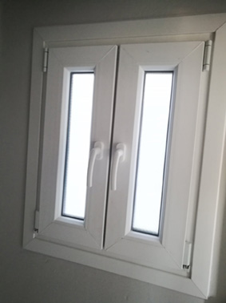
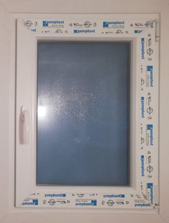
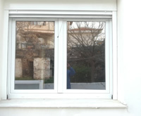
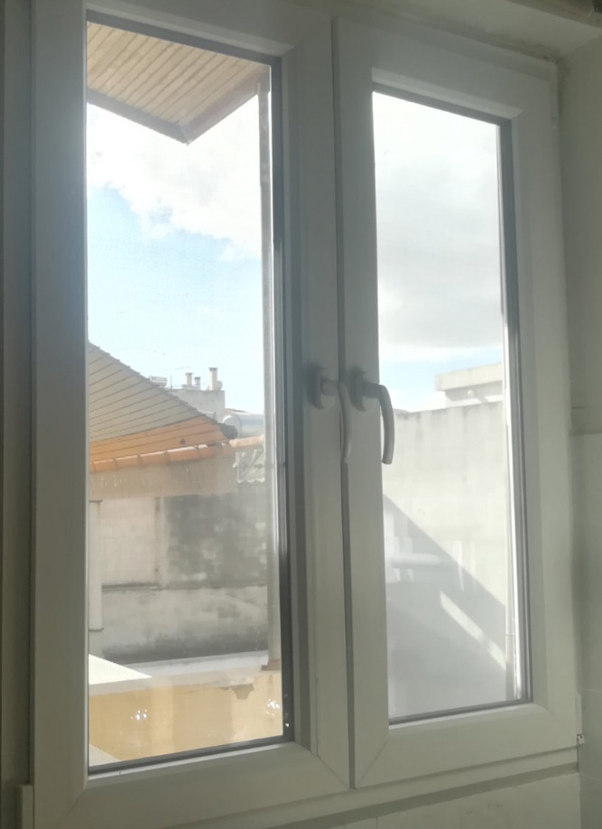
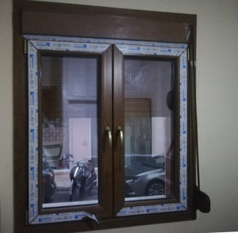

12 ΧΡΟΝΙΑ ΕΓΓΥΗΣΗ
Τα παράθυρα pvc της PVCOUTLET® πληρούν τα παγκόσμια πρότυπα των pvc κουφωμάτων και σε περίπτωση ελαττώματικού προϊόντος αναλαμβάνουμε την επιδιόρθωση τους, εντελώς Δωρεάν.
ΕΞΟΙΚΟΝΟΜΙΣΗ ΚΑΤ' ΟΙΚΟN
Αλλάξτε τα παλιά σας παράθυρα μέσω το προγράμματος «Εξοικονόμηση κατ΄ Οίκον ΙΙ» το οποίο προσφέρει με μειωμένο κόστος αναβάθμισης της ενεργειακής αποδοτικότητας και την αντικατάσταση παραθύρων.
ΠΑΝΕΛΛΑΔΙΚΗ ΠΑΡΑΔΟΣΗ
Παραδίδουμε και εγκαθιστούμε τα παράθυρά σας και εκτός Αθηνών, σε όλη την Ελλάδα. Εφόσον το ζητήσετε, παραλαμβάνετε ή παραδίδουμε τα pvc παράθυρα Κυριακές και άλλες ημέρες επίσημων αργιών.
Προσφέρουμε PVC παράθυρα σε όλες τις διαστάσεις και σε πολλούς χρωματισμούς. Στην PVCOUTLET® θα βρείτε μονόφυλλα και δίφυλλα παράθυρα pvc για το σαλόνι, τα υπνοδωμάτια, το μπάνιο και την κουζίνα. Τα παράθυρα pvc της PVC OUTLET® συνδιάζουν κορυφαία αισθητική με υψηλά επίπεδα θερμομόνωσης, ηχομόνωσης και ασφάλειας. Όλα τα pvc παράθυρα έχουν διπλά ενεργειακά τζάμια 24χλ. 4 εποχών, ακουστικά χερούλια και αντιδιαρρηκτική προστασία.

Τα προφίλ EcoLux έχουν βάθος 70 mm και εξαιρετικές παραμέτρους θερμομόνωσης και ηχομόνωσης. Λόγω της δεκαεξαμετρικής δομής και της δυνατότητας στεγανοποίησης με τρεις σειρές παρεμβυσμάτων, αυτά τα προφίλ εμπίπτουν στην κατηγορία premium. Αποτελούν τη ναυαρχίδα των κουφωμάτων της PVCOUTELT®.

Παρόμοια με τη σειρά EcoLux, τα προφίλ της σειράς EcoLux Light εμπίπτουν στην premium γκάμα. Τα προφίλ EcoLux Light έχουν σχεδιασμό βασισμένο σε στρογγυλεμένες άκρες και συμπαγείς διαστάσεις, κατάλληλα για ενσωμάτωση σε κάθε τύπο κτιρίου. Χρησιμοποιούν το ίδιο σύστημα ενίσχυσης και αξεσουάρ με τη σειρά EcoLux.

Τα προφίλ που χρησιμοποιούν αυτό το σύστημα Premium έχουν μία δομή με 7 θαλάμους και στοχεύουν στην αύξηση του υψηλότερου βαθμού θερμομόνωσης και ηχομόνωσης. Με συντελεστή μεταφοράς θερμότητας 1,2 V / m2K για ενισχυμένα προφίλ, η σειρά UltraTherm είναι μία από τις πιο ευνοϊκές στην αγορά.

Κυκλοφόρησε στην αγορά το 2017 ως μια εξελιγμένη παραλλαγή της σειράς ECOTHERM LIGHT, τα προφίλ Solid400 είναι φιλικά προς το περιβάλλον και έχουν βελτιωμένες τεχνικές παραμέτρους. Αυτά τα προφίλ διατηρούν συμπαγή σχεδίαση και δομή τεσσάρων θαλάμων.

Η σειρά προφίλ PVC Premium Solid500 χαρακτηρίζεται από δομή με 5 θαλάμους και ένα σχέδιο με πολυγωνικές όψεις και στρογγυλές άκρες. Χάρη στη βελτίωση του συστήματος στερέωσης και της δομής του, τα προφίλ Solid500 έχουν αυξημένη αντίσταση.

Με το σύστημα SYNEGO το σπίτι σας είναι θερμό, φιλόξενο και ασφαλές: Σε αντίθεση με τα συμβατικά παράθυρα, το σύστημα SYNEGO πείθει με την έως κατά 50% περισσότερη θερμική απόδοση*. Κατ' αυτόν τον τρόπο μειώνετε αισθητά το κόστος θέρμανσης και βιώνετε το αίσθημα της ευεξίας.
ΕΡΩΤΗΣΕΙΣ & ΑΠΑΝΤΗΣΕΙΣ
Διαβάστε τις απαντήσεις στα πιο συνήθη ερωτήματα για τα συνθετικά παράθυρα από pvc. Μάθετε όλες τις πληροφορίες που χρειάζεστε για να κάνετε τη σωστή επένδυση για το σπίτι σας. Τα συνθετικά παράθυρα από PVC διαφέρουν από μάρκα σε μάρκα σε ποιότητα και χαρακτηριστικά. Ρωτήστε τον πωλητή για τα τεχνικά χαρακτηριστικά όπως θερμικό συντελεστή, τη στεγανότητα και την αντιδιαρρηκτική προστασία που προσφέρουν τα παραθυρα που πρόκειτε να αγοράσετε.
Πως μετριέται η θερμομόνωση των παραθύρων pvc;

Η θερμομόνωση των κουφωμάτων μετριέται με βάση τον θερμικό συντελεστή τους ο οποίος μετρά με πόση δυσκολία περνά η θερμότητα, διαμέσου ενός υλικού ή στρώσεων υλικών (σύστημα) με διαφορά θερμοκρασίας στις δύο πλευρές του ίση με ένα βαθμό Κέλβιν. Ο συντελεστής R μετριέται σε τετραγωνικά μέτρα επί βαθμούς Κέλβιν ανά βατ (m² K/W). Όσο μεγαλύτερος είναι ο συντελεστής R ενός υλικού, τόσο καλύτερη θερμομόνωση έχει. Κατά κανόνα τα ανοιγόμενα παράθυρα έχουν καλύτερα ποσοστά θερμομόνωσης από τα συρόμενα.
Πως μπορούμε να καταλάβουμε πόσο ηχομονωτικό είναι ένα παράθυρο pvc;

Η ηχομόνωση των παραθύρων pvc εξαρτάται άμεσα από τον τύπο του παραθύρου. Τα ανοιγόμενα παράθυρα μονώνουν με περιμετρικούς μηχανισμούς και έχουν καλύτερη ηχομόνωση από τα συρόμενα που μονώνουν μόνο με βουρτσάκια. Τα ρολά επίσης όταν τοποθετούνται πάνω από το παράθυρο και όχι εξωτερικά πρέπει να εμπεριέχουν μονωτικά υλικά όπως Dow αλλιώς ο ήχος θα περνάει από μέσα. Η ηχοπροστασία εξαρτάται επίσης από το διάκενο, την υάλωση και το πάχος του υαλοπίνακα.
Τι σημαίνει αντιδιαρρηκτική προστασία παραθύρου pvc;

Η Ελληνική αστυνομία προτείνει παράθυρα με αντιδιαρρηκτική προστασία τουλάχιστον 2ου επιπέδου αντίστασης (RC2). Ενεικτικά, ένα παράυθρο προστασίας RC1 (Resistance Class 1) έχει χρόνο αντίστασης περίπου 3 λεπτά και παραβιάζεται από απλά εργαλεία ενώ ένα παράθυρο κατηγορίας RC4 προσφέρει τουλάχιστον 10 λεπτά αντίστασης και παραβιάζεται από ειδικά εργαλεία κρούσης. Στα παράθυρα της PVCOUTLET® τα κρύσταλλα του παραθύρου συγκολλάται σε όλη την περίμετρο του προφίλ και παρέχει ισχυρό δεσμό επιπέδου RC2+.
Ποιό είναι το ιδανικό μέγεθος παραθύρων pvc;

Το ιδανικό μέγεθος παραθύρων διαφέρει από χώρο σε χώρο. Ένας γενικός κανόνας είναι όσο μεγαλύτερα τόσο το καλύτερο καθώς θα περνάει περισσότερο φώς, όμως πρέπει να αναλογιστείτε και άλλους παράγοντες. Τα ανοιγόμενα παράθυρα καταναλώνμουν πολύ χώρο στο άνοιγμά τους, λιγότερο όμως από την ανάκλισή τους. Τα συρόμενα επάλληλα δεν καταναλώνουν καθόλου χώρο, αλλά περιορίζονται στο μισό άνοιγμα καθώς το ένα χωνεύεται μέσα στο άλλο.
Ξεφλουδίζουν τα συνθετικά παράθυρα pvc σε απομίμηση ξύλου;

Όλα τα pvc παράθυρα δεν είνα ίδια. Στην αγορά θα βρείτε πολλές μάρκες και διαφορετικές ποιότητες. Τα ξύλινου τύπου παράθυρα Pvc έχουν πολύ χαμηλότερο κόστος συντήρησης απο τα αληθινά και πολύ μεγφαλύτερη διάρκεια ζωής κάτω από αντίξοες συνθήκες. Η τεχνολογία τους συνεχώς βελτιώνεται και πλέον η ποιότητά τους έχει φτάσει σε σημείο να δυκολεύει κάποιον να τα αναγνωρίσει από τα αληθινά. Το συνθετικό pvc δεν ξεκφλουδίζει.
Τα pvc παράθυρα ανακυκλώνονται; Είναι φιλικά προς το περιβάλλον;

Τα κουφώματα από pvc όπως οι πόρτες και τα παράθυρα που έχουμε στα σπίτια μας, κατασκευάζονται από ανακυκλώσιμο υλικό και είναι φιλικά προς το περιβάλλον. Το PVC είναι κατάλληλο για ανακύκλωση καθώς εξουδετερώνει το χλώριο και το ανακυκλώνεται πάλι σε χλωριούχο νάτριο. Με αυτή του την ιδιότητα σύνχρονες μονάδες ανακλυκλωσης καταφέρνουν αν δημιουργήσουν νέα συνθετικάκ κουφώματα ίδιας ποιότητας με τα προηγούμενα.
Ποιο είναι το ιδανικό χρώμα για τα νέα μου παράθυρα από PVC;

Τα pvc παράθυρα διατείθενται σε μεγάλη γκάμα χρωμάτων. Στην PVCOUTLET® διαθέτουμε ετοιμοπαράδοτα κουφώματα λευκού χρώματος σε διάφορες διαστάσεις. Έχουμε τη δυνατότητα κατασκευής κουφωμάτων σε όλα τα διαθέσιμα χρώματα, αυτό όμως αυξάνει το χρόνο παράδοσης και την τιμή. Ρωτήσε μας για τα νέα παράθυρα σε ανθρακί χρώμα αλλά και σε απομίμηση ξύλου που αποτελούν μια καλή εναλλακτική. Σε κάθε περίπτωση τα χρωματισά παράθυρα διατηρούν το χρώμα τους ακόμα και στις πιο αντίξοες συνθήκες όπως άμεση ηλιοφάνεια και ρύπανση της πόλης. Ζητήστε μας το χρωματολόγιο των παραθύρων pvc με όλα τα χρώματα και τις αποχρώσεις και δώστε στο χώρο σας το ύφος που σας ταιριάζει.
Ανοιγόμενα παράθυρα ή Επάλληλα; Τι να επιλέξω;

Τα ανοιγόμενα παράθυρα καταλαμβάνουν περισσότερο χώρο στο άνοιγμά τους, είναι όμως περισσότερο ηχομονωτικά από τα επάλληλα λόγω ειδικών μηχανισμών που έχουν περιμετρικά. Διαθέτουν επίσης τη δυνατότητα ανάκλισης. Αντίθετα τα επάλληλα δεν καταναλώνουν χώρο καθώς χωνεύονται το ένα μέσα στο άλλο, υστερούν όμως στην ηχομόνωση καθώς δεν "βεντουζώνουν" πάνω στο κούφωμα. Το ωφέλιμο άνοιγμά τους είναι επίσης μικρότερο των ανοιγόμενων εκτός αν χωνεύονται μέσα στον τοίχο. Σε αυτή τη περίπτωση τα ποσοστά ηχομόνωσης και θερμομόνωσης είναι χαμηλά λόγω του ανοίγματος του τοίχου. Επίσης για την τοποθέτησή τους πρέπει να υπάρχει άνοιγμα στον τοίχο.
Γιατί τα pvc παράθυρα ονομάζονται και πλαστικά ή συνθετικά;

Τα συνθετικά παράθυρα παράγονται από PVC ή αλλιώς πολυβινυλοχλωρίδιο, ένα δύσκαμπτο συνθετικό πλαστικό πολυμερές. Το PVC είναι το τρίτο πιο διαδεδομένο παραγόμενοσυνθετικό πλαστικό πολυμερές στον κόσμο. Το PVC παρασκευάστηκε κατά λάθος το 1872 απο τον Γερμανό χημιό Eugen Baumann. Το πετρέλαιο περιέχει αιθυλένιο κατά 43% και το αλάτι περιέχει χλώριο σε ποσοστό 57%. Όταν τα 2 αυτά στοιχεία ενωθούν μεταξύ τους σχηματίζουν το βινιλοχλωρίδιο, ένα άχρωμο αέριο. Προσθέτοντας οξυγόνου και φώς το βινιλοχλωρίδιο πολυμερίζεται και δημιουργείται το υλικό πολιβινιλοχλωρίδιο ή αλλιώς PVC από το οποίο κατασκευάζονται τα παράθυρα.
Άρθρα απο το blog
Παράθυρα PVC με όψη & αφή ξύλου;
Τα παράθυρα και οι πόρτες, εκτός από τον πρακικό ρόλο που έχουν για την ασφάλεια, την ηχομόνωση και την θερμομόνωση, παίζουν καθοριστικό ρόλο στη διαμόρφωση της αισθητικής ενός χώρου.
Τα συνθετικά παράθυρα pvc μπορούν να πετύχουν σε μεγάλο βαθμό την υφή και την όψη των αντίστοιχων ξύλινων, διατηρώντας τα πλεονεκτήματά τους όπως η ηχομόνωση, η θερμομόνωση και το χαμηλό κόστος συντήρησης.
Όσοι έχετε ξύλινα παράθυρα ή άλλα ξύλινα κουφώματα γνωρίζετε από πρώτο χέρι τις απαιτήσεις τους στη συντήρηση όπως το βερνίκωμα, το κέρωμα, το λάδωμα και το γυάλισμα.
Επίσης το κόστος αγοράς των παραθύρων από pvc είναι αρκετά χαμηλότερο των ξύλινων και αν λάβει κανείς υπόψη του την εξοικονόμιση ενεργειακών πόρων που προσφέρουν, καταλαβαίνει το λόγο για τον οποίο κερδίζουν ολοένα και μεγαλύτερο μερίδιο αγοράς.
Ανοιγόμενα παράθυρα ή συρόμενα pvc;
Όταν έρθει η ώρα να αποφασίσετε για το μέγεθος και τον τύπο των κουφωμάτων που θα βάλετε πάντα εμφανίζεται το δίλημμα ανάμεσα στα ανοιγόμενα και τα επάλληλα κουφώματα. Με τα θετικά και τα αρνητικά του, το κάθε παράθυρο είναι ιδανικό για διαφορετικές περιστάσεις. Τα ανοιγόμενα παράθυρα καταλαμβάνουν περισσότερο χώρο στο άνοιγμά τους από τα επάλληλα, είναι όμως περισσότερο ηχομονωτικά και θερμομονωτικά καθώς ο μηχανισμός που έχουν περιμετρικά λειτουργεί καλύτερα από τα βουρτσάκια που χρησιμοποιούν τα συρόμενα κουφώματα για μόνωση.
Δείτε το video από το εργοστάσιο παραγωγής παραθύρων Pvc της Ramplast
Τα πλεονεκτήματα των παραθύρων PVC
ΠΡΟΣΟΧΗ!! δεν είναι όλα τα pvc παράθυρα ίδια. Τα παράθυρα pvc της PVCOUTLET® αποτελούν εγγυημένα την καλύτερη λύση στα συνθετικά παράθυρα από pvc. Διαθέτουμε εμπειρία και τεχνογνωσία 40 ετών στα κουφώματα και είμαστε δίπλα σας να σας απαντήσουμε όλες τις απορίες. Το εξειδικευμένο συνεργείο μας αναλαμβάνει την τοποθέτιση των παραθύρων, ρολών και σίτας σε όλη την Ελλάδα. Τα παράθυρά μας πληρούν τα πιο απαιτητικά παγκόσμια πρότυπα και εγγυώνται τα μέγιστα επίπεδα θερμομόνωσης και ηχομόνωσης στις πιο προσιτές τιμές.
10 / 10 πελάτες μας προτείνουν τα PVC ΠΑΡΑΘΥΡΑ της PVCOUTLET®
Μάκης Η. ★★★★★

Value for money. την ποιότητα των κουφωμάτων pvc την έχω δοκιμάσει εδώ και 2 χρόνια και είμαι πολύ ευχαριστημένος για την τιμή που τα πήρα. Το παράθρο στο μπάνιο είναι με αμοβολή και δεν έχει εμφανίσει μούχλα, κιτρινίλες ή αλλά προβλήματα. Συστείνω ανεπιφύλακτα.
Αγγελική Σιδέρη★★★★★
Εξαιρετική ποιότητα παραθύρων PVC με πολύ καλύτερη ηχομόνωση από τα αλουμίνια που είχα. Πολύ καλή και άμεση εξυπηρέτηση. Σημαντικό να βάλετε το κουτί για το ρολό εξωτερικά και όχι από πάνω από το παράθυρο για μέγιστη ηχομόνωση και θερμομόνωση
➟ Δείτε τα κουφώματαΑνακαινίσεις Μπέζος. ★★★★★
Συνεργάζομαι με την PVCOUTLET εδώ και 10 χρόνια περίπου και δηλώνων πολύ ευχαριστημένος σε όλα τα επίπεδα. Πάντα προτείνω στους πελάτες κουφώματα pvc για να κρατάω τα κόστη χαμηλά χωρίς εκπτώσεις στην ποιότητα. Η PVCOUTLET έχει PVC παράθυρα και μπαλκονόπορτες σε ασυναγώνιστες τιμες και την τεχνογνωσία να τα τοποθετήσει σωστά και γρήγορα. Πραγματικοί επαγγελματίες που κάνουν τη διαφορά σε επίπεδο προϊόντος και υπηρεσίας.
Renos ★★★★★
Evala diplo parathyro pvc me sita kai rolo. Poli kali timi kai grigori topothetisi sti Mandra Attikis. Poli kali monosi ston iho kai sto krio. Poli kalo parathiro.
Κλεομένης Μουσούρης ★★★★★
Πρόσφατα ένας φιλος μας έκανε ανακαινιση στα κουφώματά του και έβαλε τα pvc της PVCOUTLET και έμεινε τόσο ευχαρισημένος που μας έπεισε να τα ανακαινίσουμε κ εμείς. Συγκεκριμένα αλλάξαμε 3 παράθυρα και 4 μπαλκονόπορτες και αλλάξαμε τα παλιά ξύλινα πατζούρια με νέα ρολά. Σε όλα τα κουφωματα προσθέσαμε σίτες πλισσέ. Είμαστε πολύ ευχαριστημένοι απο την συνέπεια, την ποιότητα και την τιμή της PVCOUTLET.
Pietrus Kalita ★★★★★
Στο παράθρο που συνορεύει με το μπαλκόνι του γείτονα πάντα είχα θέμα με τη φασαρία. Παλιό σπίτι στο Ψυχικό με παλιά ξύλινα κουφώματα. Με 180€ άλλαξα το παράθυρο σε pvc και ησύχασα. Πολύ καλή ηχομόνωση και πολύ καλές τιμεσ στα παραθυρα.
Χαρίτος Αντρέας ★★★★★

Ετοιμοπαράδοτα παράθυρα Pvc σε πολύ καλές τιμές. Πήρα παράθυρο pvc μπάνιου με 50€.
Ζάχος Φωτόπουλος ★★★★★
Πολύ ρεαλιστικό τύπου ξύλου παραθυρο pvc με πολύ καλή υφή. Καλή ποιότητα κατασκευής και ωραία χρυσαφί ακουστικά χερούλια. Πήρα το Ramplast αντί του Rehau γιατί είχα καλύτερη τιμή και χρόνο παράδοσης και ήταν πολύ καλό σε ποιότητα. Έβαλα και χειροκίνητο ρολό και σίτα κάθετη. Θα αλλάξω και τα υπόλιπα κουφώματα αν παρω το πρόγραμμα εξοικονομώ κατοίκον.
ΜΑΝΩΛΗΣ ΤΣΙΩΛΗΣ ★★★★★

Ήθελα ένα διπλό ανοιγόμενο παράθυρο για να έχω το μέγιστο άνοιγμα στο μπαλκονάκι μου. Αν το έκανα μονό θα ενοχλούσε όταν άνοιγε και με συμβούλεψαν σωστά να κάνω δύο φύλλα. Όπως βλέπετε δούλεψε πολύ καλά. Εξυπηρετικοί με απαντήσεις σε όσα δε καταλάβαινα, με όρεξη και χαμόγελο. Πολύ καλή συνενόηση και πολύ καλες τιμεσ αγορας και εγκατάστασης.
➟ Δείτε τις μπαλκονόπορτεςΠέππας Ηλίας ★★★★★

Παραθυράκι μπάνιου σε απίστευτη τιμή. Ανοιγόμενο, με ανάκλιση, σίτα κάθετη και αμοβολή στο κρύσταλλο. Έυκολη εξυπηρέτιση μέσω τηλεφώνου και πολύ γρήγορη παράδοση και τοποθέτιση.